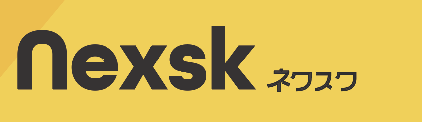
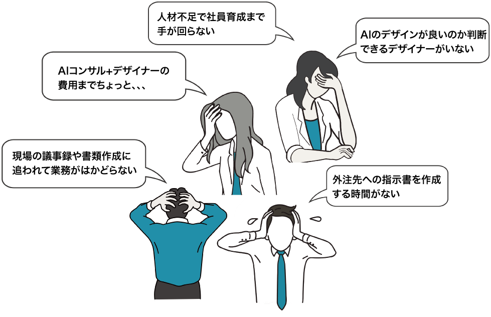
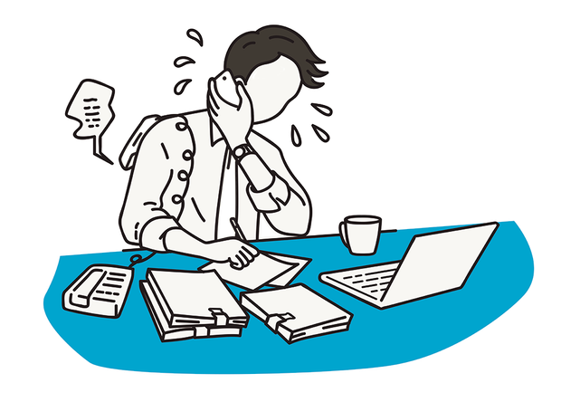
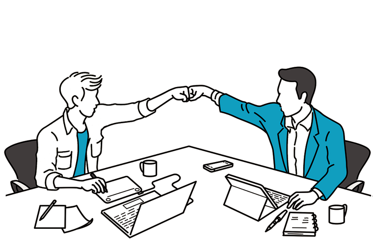
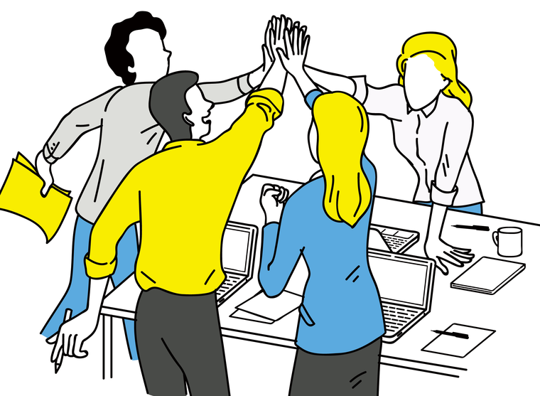
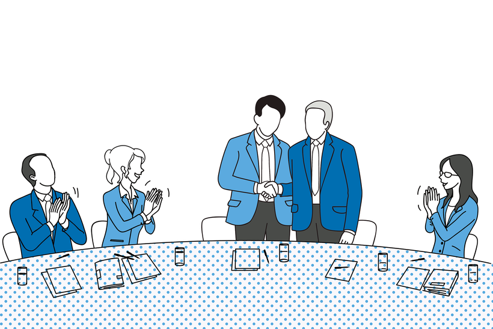

時間を洗い出す
議事録、報告書、外注指示書、見積り、提案資料など、毎月どれだけ時間が取られているかを確認します。

ネクスク AI版 Next Desk with AI 無料相談Problem
まずは建築・空間・店舗の現場を中心に。人手が足りない。けれど、すぐに増員できるわけではない。現場の時間が雑務に取られ、本来価値の高い仕事へ向かえない構造を変えます。

現場の雑務をAIで効率化して稼働時間を短縮し、空いた時間を本来価値の高い仕事へ回して稼働率を上げる。これがネクスクAI版の一番の目的です。
AIが代わりに行うのは、CG・模型などの制作そのものではありません。議事録、指示書、工程表、見積り、報告書など、現場を進めるための段取りや文書業務、デザイン提案資料の作成などを効率化します。
First Step
実績数値を断定するのではなく、御社の業務を一緒に見て、どこからAI化すべきかを初回診断で整理します。
議事録、報告書、外注指示書、見積り、提案資料など、毎月どれだけ時間が取られているかを確認します。
外注すべき制作物と、社内で下準備・指示・たたき台化できる業務を分け、削減余地を見える化します。
すぐ効く業務、後回しでよい業務、AI化しない方がよい業務を分け、最初に着手すべき改善テーマを明確にします。
AIに任せる作業、人が判断する品質・ブランド・法令面を切り分け、安心して使える運用にします。
Why Now
外注、コンサル、AIツール。そのどれか一つだけでは、日常業務の中に改善が残りにくいからです。

成果物は納品されても、考え方や進め方が社内に残りません。
戦略は見えても、現場の文書や段取りまで落ちないことがあります。
入れただけでは、誰が何にどう使うかが定まりません。
任せるだけでは、提案や改善の良し悪しを判断する力が社内に残りません。
足りないのは、戦略も分かり、手も動かし、AIも使いこなす、隣の机の相棒です。
Service
経験あるディレクターと、24時間動くAIが、
依頼企業の隣の机に並び、日常業務を伴走するサービスです。

共創協働の思想はそのままに、AIがもう一つの机として参加します。人が方向を決め、AIが下支えし、時には現場にて一緒に考えながら、社内でまわせる仕組みへ育てます。
近い将来、AIでの業務改善の波は必ず来ます。人手不足を解消する最善の方法として、今から日常業務に組み込んでいきます。
戦略・ディレクション・壁打ち・品質判断を担う。
議事録、資料ドラフト、調査、定型業務を高速化する。
単発で終わらせず、検証と改善を日常に組み込む。
雑務の効率化で、企画・提案に使える時間を増やします。
属人化・外注依存を解き、社内でまわせる型へ。
AIの使い方を業務に即して設計し、社員が使える状態へ。
生まれた時間を、企画・提案・ブランディングなど、生産性を高める仕事へ回します。
Before / After
AIの機能自慢ではなく、日常業務の詰まりをどう変えるかに絞って設計します。
| 業務シーン | これまで（人のみ） | ネクスクAI版（人×AI） |
|---|---|---|
| 打合せ | 議事録は後日、抜け漏れも。 | その場で議事録・ToDo・決定事項を自動整理。 |
| 企画・提案 | 叩き台に数日。 | AIで初稿を即日、人が磨いて質を担保。 |
| 調査・情報整理 | 担当者の手が止まる。 | AIが一次調査、要点を人が判断。 |
| 社内定着 | 一部の人に属人化。 | 使い方を仕組み化し、社員がAIを使えるように育成。 |
| コスト | 外注の都度発生。 | 月定額で予測可能・内製化で逓減。 |
AIは道具ではなく、課題を解決するためのパートナーです。判断と世界観づくりは人が担います。
Value
効率化だけで終わらせず、人とブランドの力を上げるためにAIを使います。

外注依存から、社内で企画・指示・改善をまわせる体制へ。
AIを活用しデザイン思考を身につけ、生まれた時間を本来価値の高い仕事へ回します。
単なる効率化ではなく、会社や店舗の「らしさ」を守りながら改善します。
評論家ではなく、スタッフの一員として日常業務から伴走します。
Flow
小さく始めて、役割分担を明確にし、検証しながら業務へ定着させます。
現状の課題、雑務、外注依存、AI利用状況を整理します。
人×AIの役割分担を合意し、改善テーマを決めます。
議事録、資料、調査、テンプレートなどから実務に組み込みます。
成果をブランドや中長期ビジョンにフィードバックします。
Price
継続伴走は月定額プランで設計します。
課題の範囲と伴走頻度に応じて、最適なプランを個別に設計します。
¥150,000〜
相談・壁打ちを中心に、AI活用の入口を整えるプラン。
¥250,000〜
議事録、指示書、資料ドラフトなど、実務へ組み込むプラン。
¥400,000〜
業務改善、内製化、人材育成、ブランドへの接続まで深く伴走し、別途項目も内容により範囲設計するプラン。
費用は要相談
AI活用や業務改善の考え方を、社内に共有するための単発・社内向けプラン。
月の定例MTGは、基本的にWeb会議で実施します。対面対応が必要な場合は、内容やエリアに応じて個別にご相談ください。
以下は原則として別途費用ですが、内容や作業量によりプラン内に含めて設計できる場合があります。
Reason
机上のAI活用ではなく、現場に接地したデザイン実務から改善を組み立てます。

空間設計・ブランディングの現場で培った判断軸があります。
業務の筋道を整理しながら、体験とブランドの質を落としません。
遵法性と実務の制約まで見据えて伴走します。
ツール紹介で終わらせず、日常業務で使える形に設計します。
FAQ
導入前に気になりやすい点を、先に整理しました。
判断は人が担います。AIは議事録、整理、初稿、定型作業の下支えをし、最終的な品質と世界観は経験あるディレクターが確認します。
まずは建築・空間・店舗に関わる企業におすすめしています。提案資料、外注指示、見積り、現場書類、販促・SNSなど、現場とブランドの両方を扱う業務と相性が良いサービスです。上記以外の中小企業も、課題内容に応じて対応可能です。
大丈夫です。使い方の設計、テンプレート化、社員が使える状態への育成まで含めて伴走します。ご希望に応じて、社内向けセミナーの開催もいたします。
AI活用の定着と業務改善の効果検証には一定の運用期間が必要なため、基本の最低契約期間は6か月を目安としています。伴走範囲や運用体制に応じて、無料相談時に前提を確認します。
簡易なテンプレート化や使い方の整理は、スタンダード以上の伴走範囲に含めて設計できます。本格的なマニュアル化、研修設計、複数部署への展開、システム構築を伴うものは、内容と作業量により別途費用・要相談です。
制作物として図面・CG・模型・ロゴ・HP等、成果物として別納品になるものは原則として別途費用です。個別のGPTs / AI Agent等の構築、見積積算システム、Webアプリ・業務システム、データベース接続やAPI連携実装、研修、マニュアル化なども、内容や作業量によりプラン内に含められる場合があります。無料相談時に範囲を確認します。
対応エリア・オンライン可否は要相談です。業務内容や打合せ頻度に合わせて進め方を設計します。
Contact
現場の雑務、外注依存、AI導入の停滞。いま詰まっている仕事を一つ持って、無料相談にどうぞ。